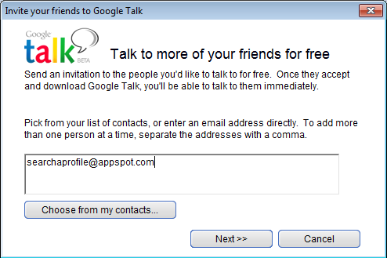
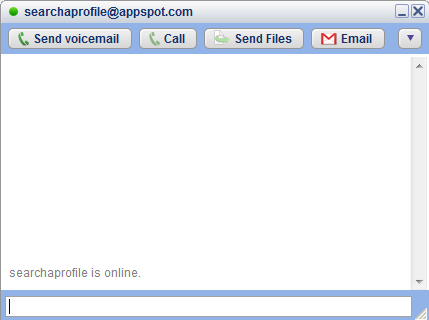
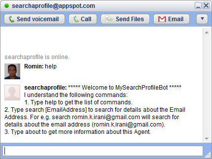
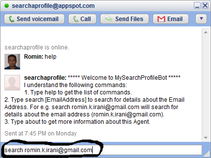
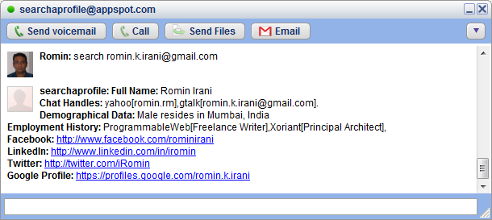

2 Minute Usage Guide
We will cover a simple use case of getting more information based on an email address that we have i.e. romin.k.irani@gmail.com
Step 1 :Launch Google Talk, Sign In and click on the "Add" button shown below:
Step 2 :Add searchaprofile@appspot.com as a contact and complete the steps.

Step 3 :This will add the Search a Profile Bot to your friend list. Click on it and you should see that the Search a Profile Bot is available as shown below.

Step 4 :Search a Profile Bot understands only a few commands. To get a list of commands that it understands, simply type help as shown below. It will display a list of commands that it will obediently follow. It will also keep emotions aside and continue to execute the same command even if you try to bore it :-)

Step 5 :To search for a profile, simply type search EMAIL_ADDRESS where EMAIL_ADDRESS is the email address of the contact.
Example : search romin.k.irani@gmail.com will provide all details about the email address (romin.k.irani@gmail.com).

Step 6 : This will make the Bot use RainMaker API to fetch information like:
- Demographics like Age, Sex, Geographical location where the contact resides
- Contact Handles for various services like Google Chat, Skype, etc.
- Social Profiles at LinkedIn, Twitter, Facebook, Foursquare, Google Profile, Friendster, MySpace, etc.
- Employment History.

Please note that in case there is no information present about the email address, then the Bot will return an appropriate message saying that it cannot find the information. In most cases, it is likely that the Rainmaker service will do a search and if all is well, it will provide you the data the next time around. But be assured, that all public information available on the net (without infringing on privacy), will be provided as part of the search.
Hope you like the service. Thank You for using Search a Profile Bot.